Design routes, not screens
I mapped every way into and out of each screen, then drew the screens. That is how the empty, loading and offline states got designed instead of forgotten.
People kept playing Hitman Cricket, but the screens around the batting looked like a prototype. I redrew every one, from the cover to the leaderboard. Players now stay longer.
Drag the line on the phone to compare the old innings-end card with the new one.
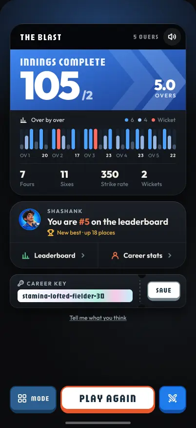
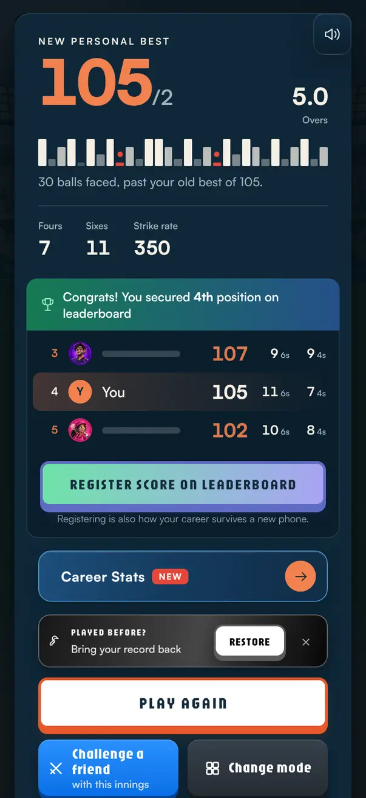
Hitman Cricket is a free 3D batting game. You swipe to hit. There are three modes: the Blast (5 overs), Test Marathon (one long innings) and Test Survival (last man in). The data said exactly who I was designing for.
So every frame is an iPhone 16 Pro, 402 × 874. On a desktop the game shows the same phone layout in a tall column, with a QR code beside it.
The game grew fast: new modes, careers, rivals and keys. Each feature added a card or a button wherever it fit. The end of an innings shows the problem best.
Thirty bars in a row, with no overs and no key. The shape of the innings was there, but you had to work it out.
The rank was there, but the biggest block on the card asked you to register to keep it, right when you wanted to bat again.
Register, career stats and restore were all full-width cards of the same weight. Nothing told you what mattered.
Seven actions in one long scroll. On a phone, the challenge and change-mode keys fell off the bottom of the screen.
Before I drew anything, I wrote these down. Whenever two ideas fought, the rule decided.
I mapped every way into and out of each screen, then drew the screens. That is how the empty, loading and offline states got designed instead of forgotten.
PLAY, PLAY AGAIN or LET’S BAT. Everything else moves to a smaller key or a row inside a card.
Orange ledge = the main actionYour rank, your best and your row appear wherever it helps: the cover, the end card and the board.
Orange always means youEach mode gets one colour that carries through its card, its end screen and its board, so you always know which game you’re in.
BlastMarathonSurvivalThe four career tiers already existed as labels. I gave each its own material and badge, navy, bronze, carbon and gold, and a road that shows all four at once.
Name, avatar and batting hand come before the first innings, when players are curious, not after it, when they want to play again.
Orange arrows are the main path. Grey dashed arrows are other routes or system events, like a timeout or a friend joining. Each node links to its own section in the handover.
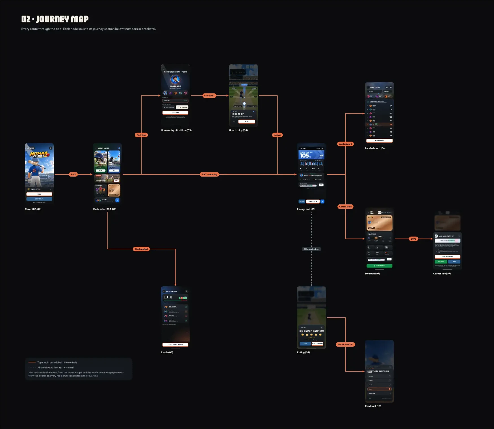
I wanted it to feel like a broadcast scoreboard: dark cards, bold numbers, and colour only where it means something. Every value is a Figma variable, so the build could match it exactly.
Page#0A0B0D
Card#1B2027
Text#F5EFE6
Text, quiet#A3B3BD
You#ED7044
Button ledge#E9582B
Share green#12924A
Gold#F5B83D
The Blast#3F88F2
Test Marathon#004225
Test Survival#FF5A4E
Win#5BD08F
Draw#F2B544
Loss#FF6B5E
Jaro for titles, poster numbers and buttons. Condensed and loud, like a stadium screen.
Satoshi for everything you read. Black for numbers, medium for sentences.
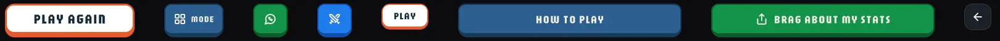
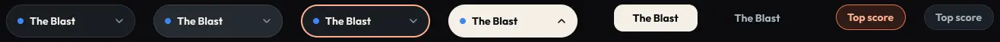
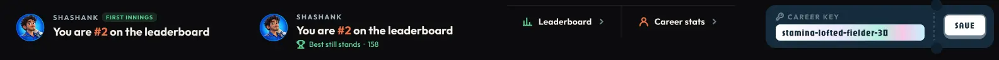
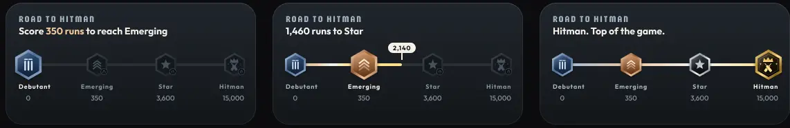
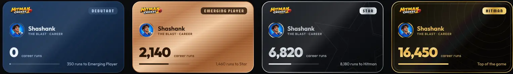
Six screens a player sees in their first session. Before is the live game on 9 October. After is the design that shipped two days later.
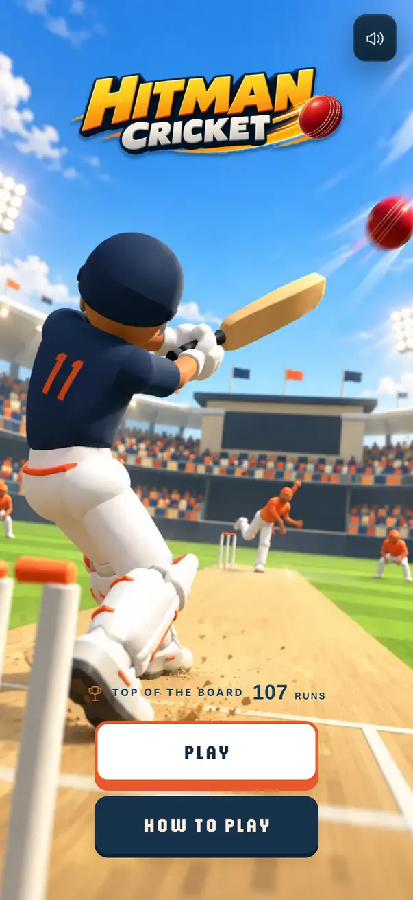
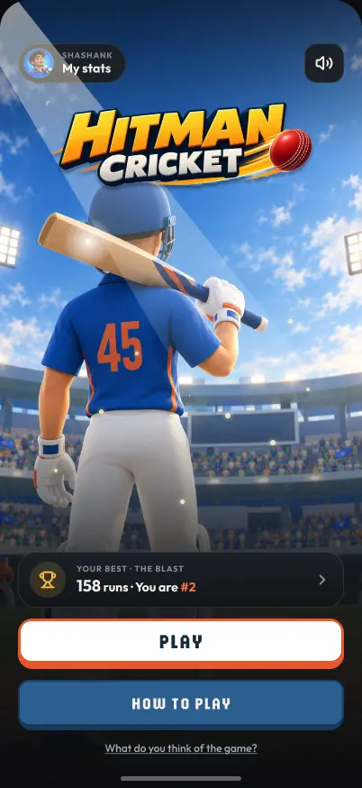
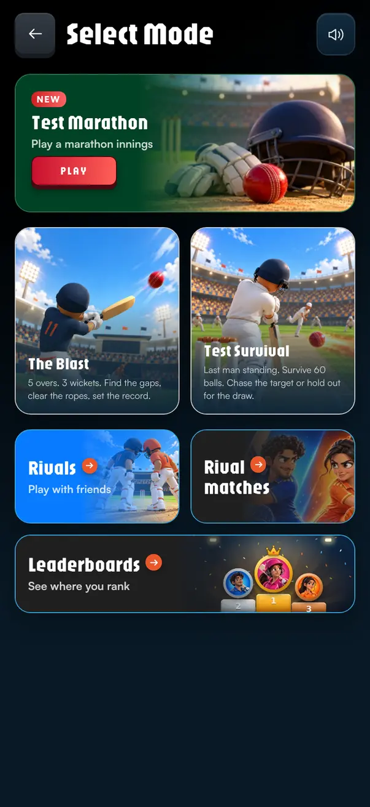
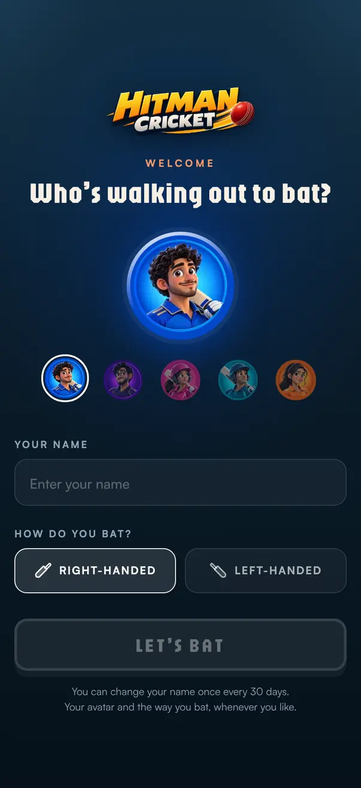
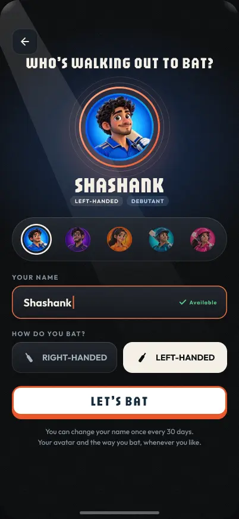
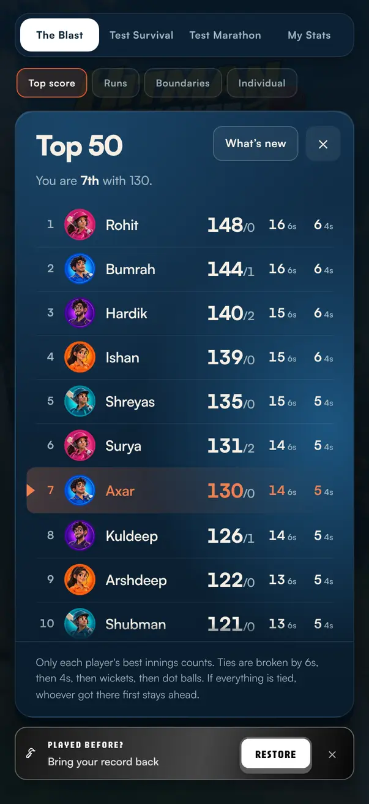
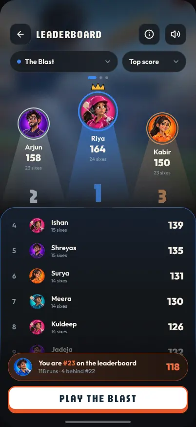
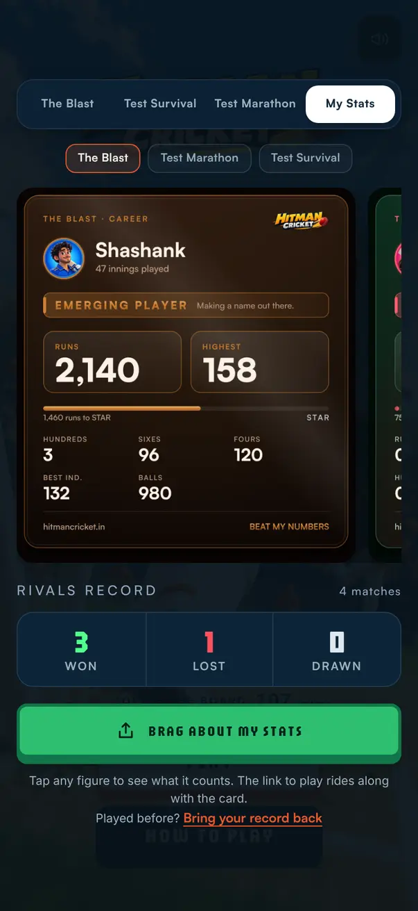
Three modes, four Survival outcomes, first innings or returning. Instead of twelve layouts, I built every end screen from the same four widgets. Only the top one changes with the game. The others change state.
The score, told the way the mode is played. Changes with the mode and the outcome.
Your rank, and what this innings did to it. Changes with your story.
The same on every screen, so it’s always in the same place.
PLAY AGAIN always in the middle. The key beside it depends on the result.
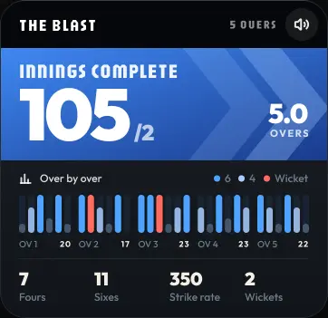
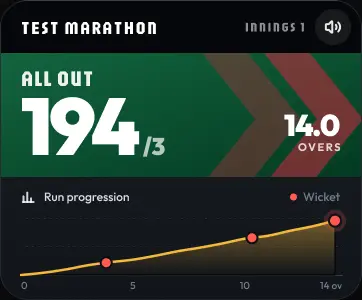
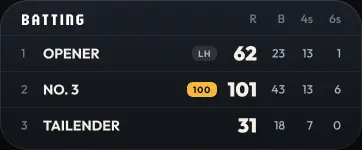
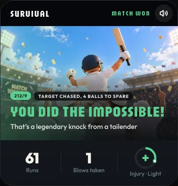
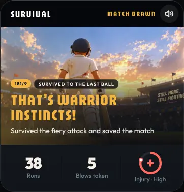
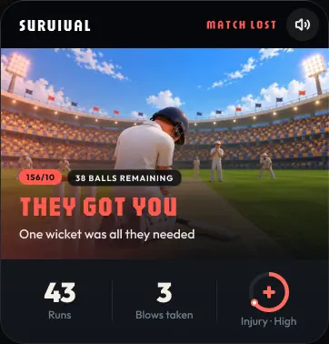
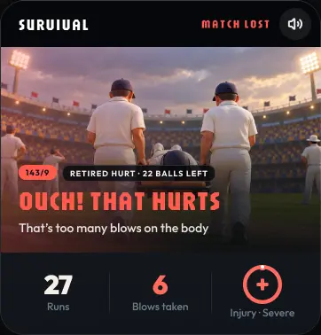
Survival keeps one layout for all four outcomes. The art, the headline colour and the injury ring do the talking.
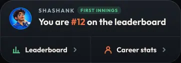
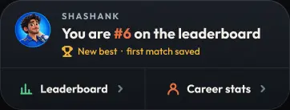
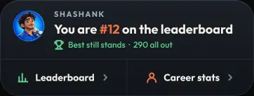
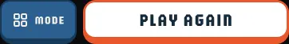
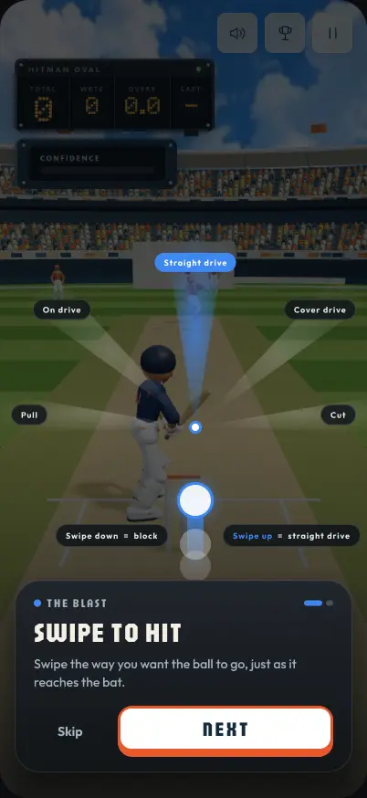
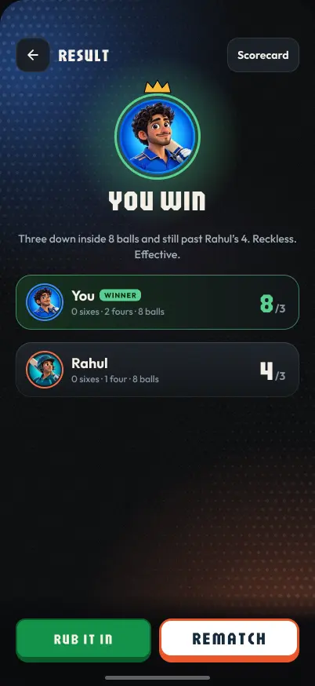
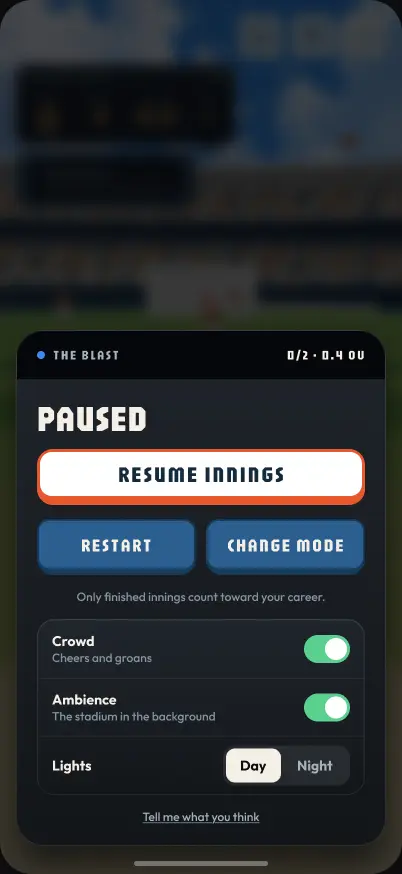
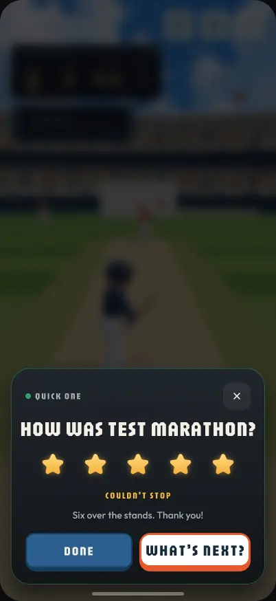
The cover is a motion poster: the floodlights stay still, while the air, dust and depth move. Everything else moves only to tell you something changed.
Tiers turned runs into a goal, and reaching one needed a moment that felt earned. Level Up plays full screen when an innings carries your career onto a new rung, then hands back to the scorecard. It shipped on 14 October.
Recorded from the game’s code, frame by frame. All three end the same way: the card flips to the new tier, the figure counts on, then SHARE STATS CARD or GO TO SCORECARD.
Arrows rushing, rays, confetti over the words.
Three chevrons, one pop, nothing behind the words. Readable, but flat.
A card you could tilt with the phone. Drawn shapes couldn’t carry the realism the game has.
The batter’s last shot sails into the floodlights while the crowd holds up your name.
Built from the game’s own pieces: the road, the six, the chevron.
Each tier is a bigger occasion
The higher the rung, the more happens, with a ceiling so Hitman never becomes noise.
Haptics follow the motion too: on the road, a tick for each step of the fill and a stronger buzz at the landing.
Four springs, set like a motion designer would
Every move is a spring, so things squash, overshoot and settle. Long moves get the softest spring, so a card flying up never overshoots onto the words.
Stiffness / damping, mass 1. Curves drawn from the game’s own spring formula over the first 1.2 seconds.
The rarest moment in the game. It plays over the end card when your innings takes first place from somebody else. It shipped on 19 October, in four acts.
One celebration per innings. If the same innings also unlocks a new bat, the unlock waits quietly in the Dressing Room. If it also climbs a tier, New #1 plays first and Level Up follows it.
The handover held the tokens, the components, notes on the data, and every state. The game was built screen by screen from that file, with each part checked in a real browser before it shipped.
Colours, type and components in code, matching the Figma variables.
Every named innings gets a place, so “You are #23” is always true.
Cover, mode select, name entry, innings end, leaderboard, My Stats, Rivals, pause.
How to play, the star prompt and the feedback form.
Visits stayed flat at about 47 a day, so the change shows in what people did once they arrived.
Share of sessions over a minute, by week
Deeper play, more career use
1.85.1
0.72.6
3.65.8
1.43.6
4.7/5
20 ratings from the star prompt after a finished innings
5 stars15
4 stars4
3 stars1
2 stars0
1 star0
15 a day before, 6 after. An early-October spike in new players ended, so the “after” group is mostly regulars.
10 a day in both periods, even with 59% fewer newcomers coming in.
14.8 a day before, 13.8 after. The board got clearer, but wasn’t opened more often.
This is not an A/B test. Level Up (14 Oct) and New #1 (19 Oct) from this work, plus the Dressing Room (12 Oct), player profiles (19 Oct) and new strokes (20 Oct), all shipped in the “after” period and will have played a part.
| Measure, a day | Before | After | Change |
|---|---|---|---|
| Visits to the game | 47.0 | 46.9 | 0% |
| Sessions past 1 minute | 30.6 | 28.3 | −7% |
| Sessions past 10 minutes | 6.5 | 10.4 | +60% |
| Sessions past 20 minutes | 1.8 | 5.1 | +187% |
| Sessions past 30 minutes | 0.7 | 2.6 | +268% |
| Career card opens* | 3.6 | 5.8 | +59% |
| Career keys issued* | 1.4 | 3.6 | +153% |
| Leaderboard opens | 14.8 | 13.8 | −7% |
| New players | 15.0 | 6.2 | −59% |
| Back the next day | 10.0 | 10.1 | +1% |
Before: 16 Sep – 10 Oct, 25 days. After: 11 – 27 Oct, 17 days; 28 Oct is left out as a part day. *Counted from the day the event was first recorded, 20 and 22 Sep. Source: GoatCounter, which has no user IDs, so every figure is a count of events, not of people.
“You are #5 · up 18 places” did more for replay than any animation. Show people where they stand, right when they’ve earned it.
Empty boards, long names, no network, a player with no name. Designing these up front meant the build had no guesswork.
Visits didn’t move, but session length did. Pick the measure that matches the design goal before you ship.